In this assignment, we first explore how to construct curves both in 2D and 3D before moving on to light shading and mesh manipulation including edge flips, splits, and upsampling.
Section I: Bezier Curves and Surfaces
Part 1: Bezier curves with 1D de Casteljau subdivision
Bezier curves are constructed with a series of linear interpolations (lerps) of their control points. You can imagine the control points as magnets that attract the curve, pulling it in its direction. To evaluate the control points at each step, the points are iterative over and the current point and point ahead are lerped to produce a new point. The resulting points are stored in a new array, 1 size smaller than the last. This repeats until the base case, which is when 1 point remains which is also a point on the curve.
Lerp Graph - Lecture 7
Below is a custom curve evaluated at each step. Notice the new points created over time reduced by 1. The final point (red) is a point that lies on the curve.
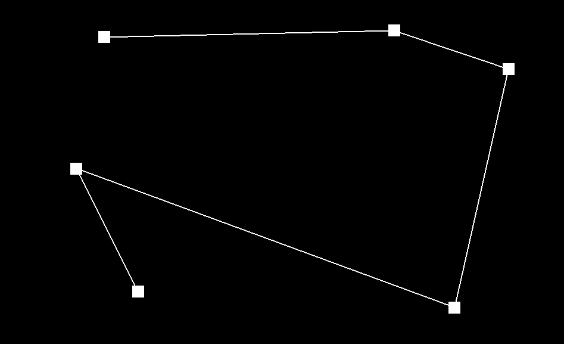
Control Points
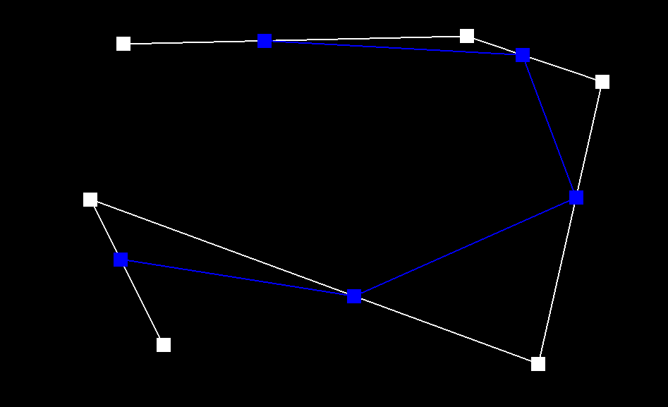
Level 1
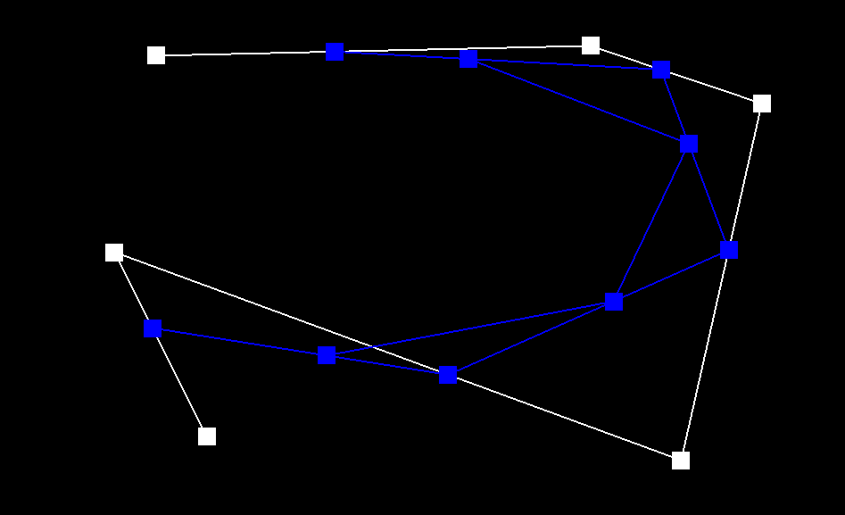
Level 2
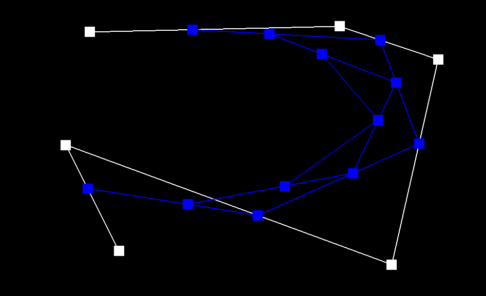
Level 3
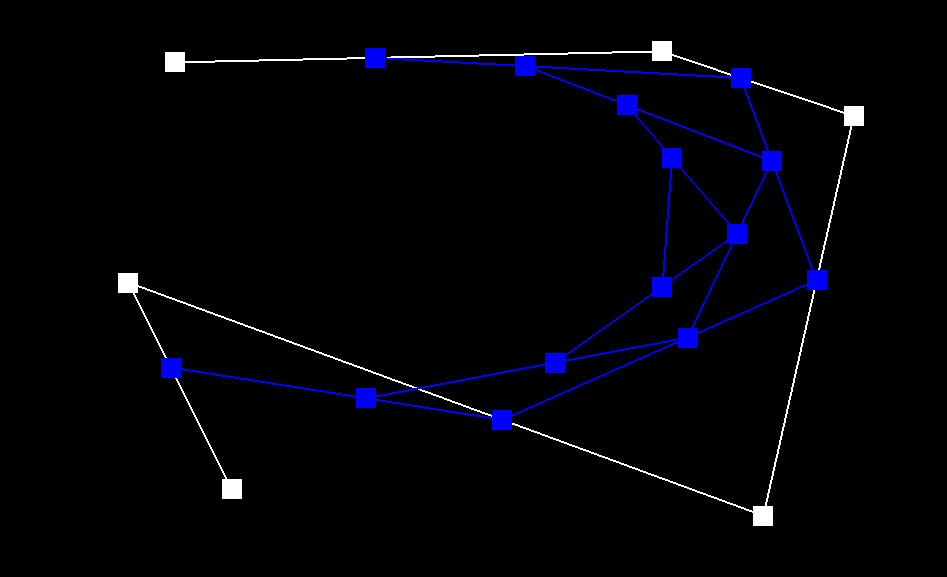
Level 4
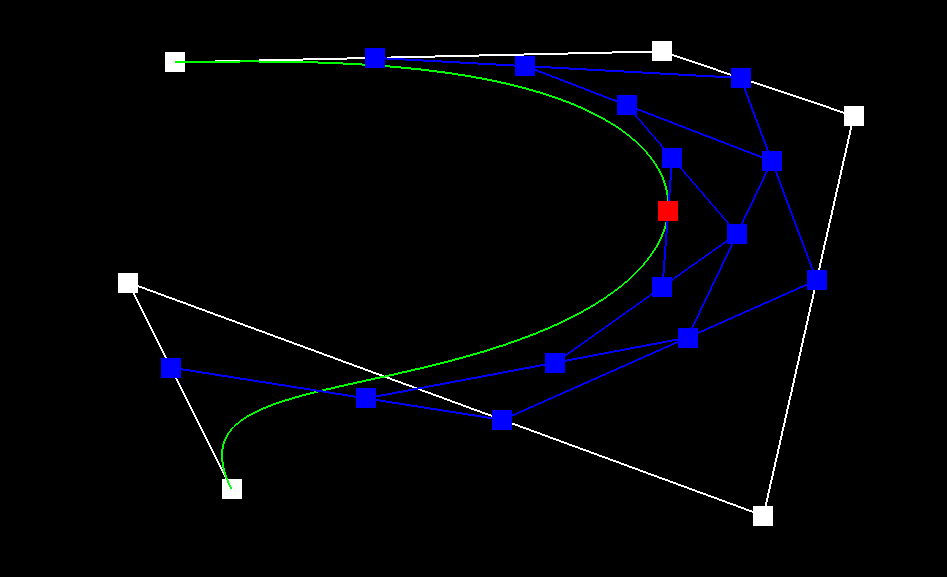
Final point
The t parameters toggles the evaluation point. Below are 3 static evaluations at different positions, and a complimentary gif showing the smooth movement using the scroll wheel.
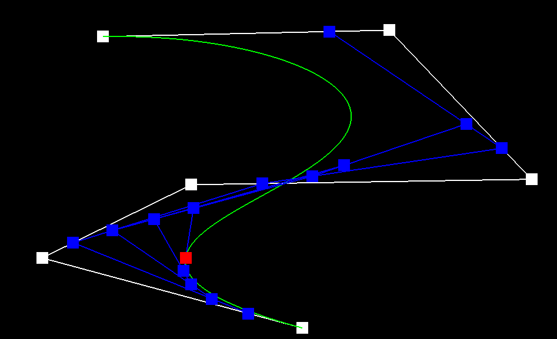
Parameter t Top
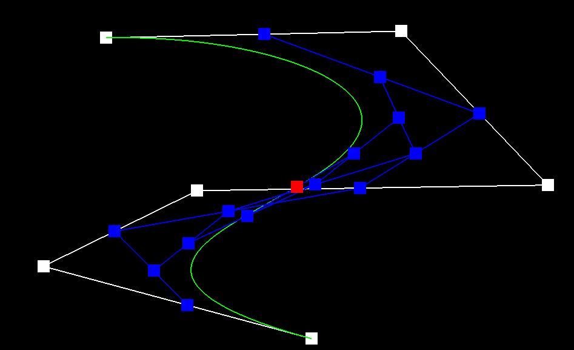
Parameter t Middle
Parameter t Bottom
Parameter t scroll (TA see website)
Part 2: Bezier surfaces with separable 1D de Casteljau
A bi-cubic Bezier surface patch has 4x4 control points, 16 total, and like the 2D case does a series of lerps to get the resulting point. First, each row of 4 points are lerped to produce 4 points. Then these points are lerped to produce the final point.
Lerp Graph 3D - Lecture 7
Recursion was used in the evaluate1D which kept calling evaluateStep (which again, reduces the number of points by 1) until there was only 1 point. The overarching function BezierPatch::evaluate used the recursive function to evaluate the rows using scalar interpolation parameter u and stored them in a vector. This final vector was fed one last time into the recursive function but this time with the other axis parameter v to get the final point.
With the algorithm implemented, we could render the teapot!
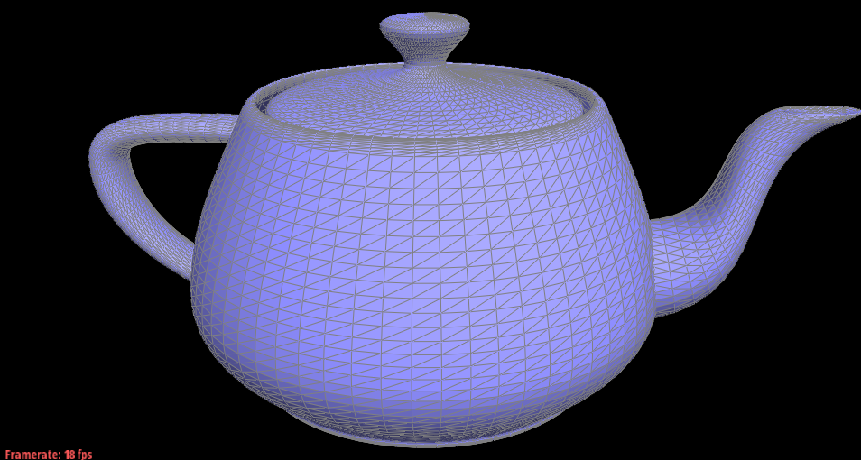
Teapot using Bezier surfaces
Section II: Triangle Meshes and Half-Edge Data Structure
Part 3: Area-weighted vertex normals
Given a vertex how can we get it's normal? One good idea is to get all the nearby triangle normal's and average it:
Neighbor Normals - Lecture 6Average Normal Equation- Lecture 6
However, we want to average the weight of the area to help combat outliers. Consider if there was one neighbor triangle that was very small but had sharp normal not aligned with the other normals. This outlier would over influence the result, thus we weigh by area to dampen these outliers.
As for implementation, we loop over every triangle face, calculate its area, and multiply it by the normal. All of these area-multiplied vectors are collected and averaged to get the final result. The before and after shows the nice shading this averaging technique produces.
As a result, the shading makes the teapot look smooth!
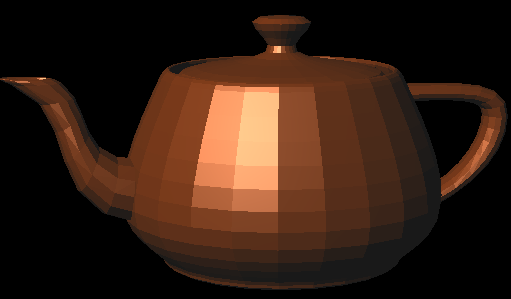
Without Averaging
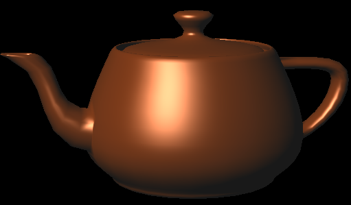
With Averaging
Part 4: Edge flip
To implement the edge flip we first defined and labeled all current elements which included the edges, faces, vertices, and half-edges. For the edge flip, we chose to flip in such a way that the flipping edge's half-edges were aligned correctly, thus we didn't need to modify edges at all. We then manually set all the half-edge references according to the labeled drawing to ensure everything got set correctly. Then, in a similar fashion, used each half-edge's setNeighbors to set up its references according to the new drawing correctly.
Teapot Before Flips
Teapot After Flips
Notes on Debugging
We initially had an issue where flipping did work, however it would leave a hole behind periodically. This was fixed by using breakpoints and observing how each element referenced its half-edges. It was found we mismatched the 2 face's half-edge and when corrected fixed the hole issue.
Part 5: Edge split
To implement the edge split we again drew out the before and after labeling each component. We created 1 vertex, 2 faces, 3 edges, and 6 new half-edges. Then reassigned according to the drawing and debugged with breakpoints.
Labeled Diagram After Split
Teapot Before Splits
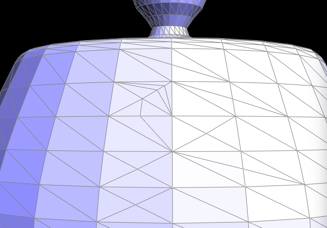
Teapot After Splits
Teapot With Flips
Teapot With Flips then Splits
Teapot With Flips then Splits then Flips
Extra Credit: Boundary Edge split
Implementation of boundary was rather simple; only 1 vertex, 1 edge, 1 face, and 3 half-edges needed to be created. The strategies of reassignment was the same as part 4 & 5. See the result on the car model:
Before
After
Part 6: Loop subdivision for mesh upsampling
We follow the TA's suggested steps which are the following:
1. Compute the new positions for all the pre-existing vertices using the neighbor vertex equations
double u = (n == 3) ? 3.0/16.0 : 3.0/(8.0 * n);v->newPosition = (1 - n*u) * v->position + u * neighborSum;
2. Compute the new vertices (the ones created from the splits) new positions, using the given equation.
e->newPosition = (3.0/8.0) * (A->position + B->position) + (1.0/8.0) * (C->position + D->position);
3. Split every edge. We modified the split function to set the edges and vertex to be flagged as new. We also created a new flag isOriginal for the edges. This is so we do not flip edges in line with the previous mesh.
4. Flip any new edge that connects an old and new vertex using the flags.
5. Copy the vertex new positions into the vertices.
6. Reset flags in case additional subdivisions are used.
The result is below. Sharp corners are radically smoothed out. However, the mesh can become somewhat uneven near corners which leads to the next discussion on pre-processing.
Before
After
Cude.dae Pre-process
Below is a cube after multiple rounds of upsampling. Notice that near the edges, the cube becomes asymmetric. This is because the cube was not symmetric to begin with; the diagonal lines prevent it from being so. This can be fixed with some splits beforehand, hence the "pre-processing" before the upsampling occurs.
No upsampling
Upsampling 1
Upsampling 2
Upsampling 3
Below shows the splitting of every diagonal edge (making the mesh symmetric) of the cube and then upsampling. Notice it remains symmetric after the upsampling!
Pre-process
Pre-process Upsampling 1
Pre-process Upsampling 2
Pre-process Upsampling 3
Pre-process Upsample 3 front view
Debugging
We used break points as discussed previously, however, the subdivision actually exposed incorrect assignments that were missed in the flipping and splitting code. These small errors were invisible until subdividing which caused infinite looping and face gaps.
Extra Credit
To allow boundry split, we we first check if the vertex was on a boundry, if so find its 2 neighbor's vertice and apply the equation found in the resource for the newPosition:
Team member Jeremy used ChatGPT o3-mini-high to quiz his knowledge on HW2 topics, learn new C++ syntax, and debugging. He did not use it for any report writing.
What Did You Learn? (Jeremy)
GPT is great at summarizing ideas and ensuring you understand the HW concepts clearly. For example, I would explain what bilinear is in my own words and ask GPT if I had any misconceptions. At various times I'd get stuck with some C++ debugging and GPT is able to read the error log and give some ideas as to what might be wrong. I've found it can explain syntax better and faster than the docs.